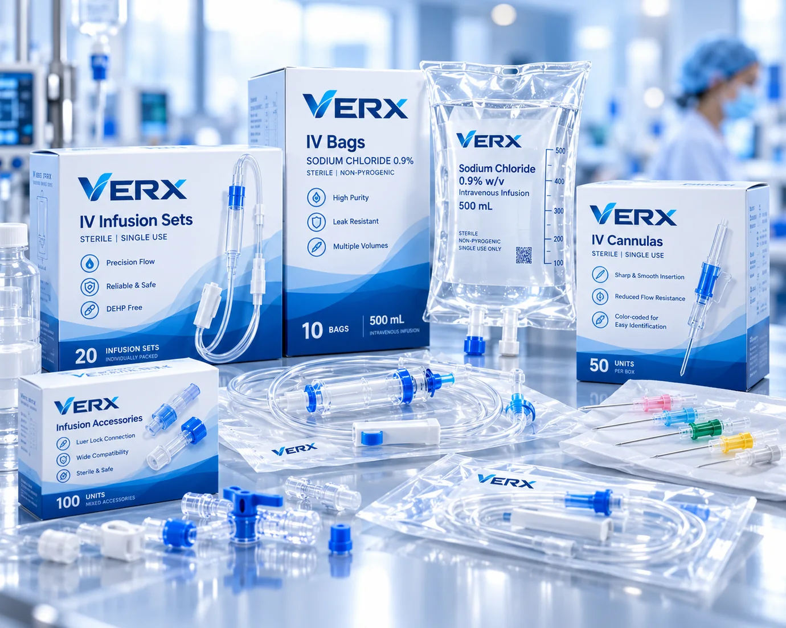
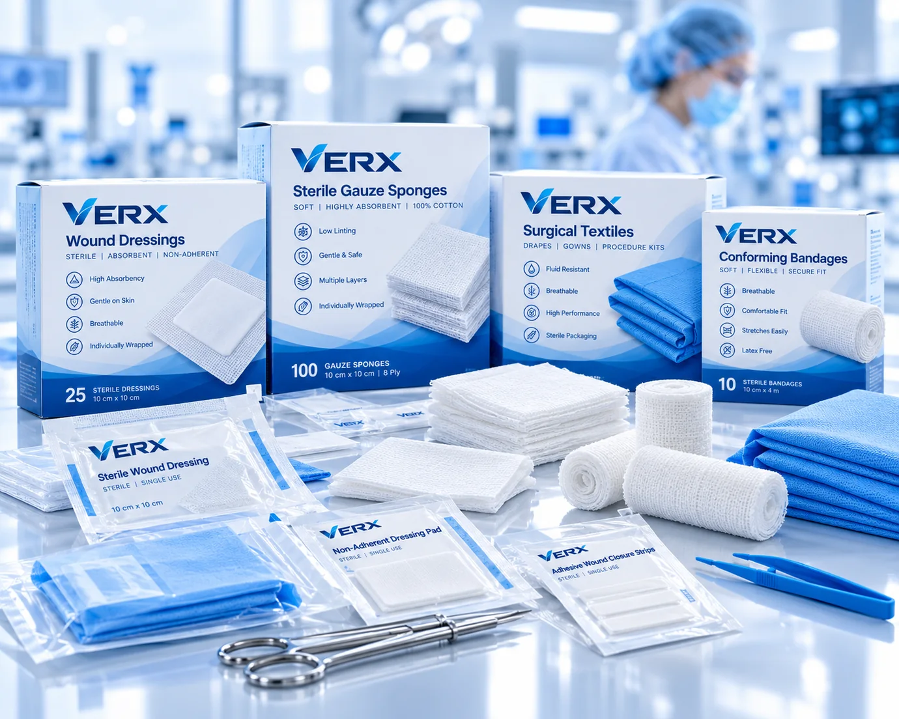
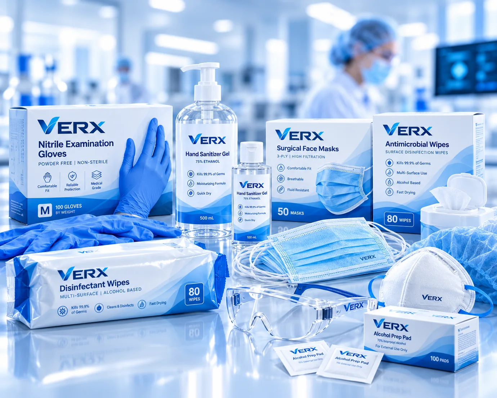
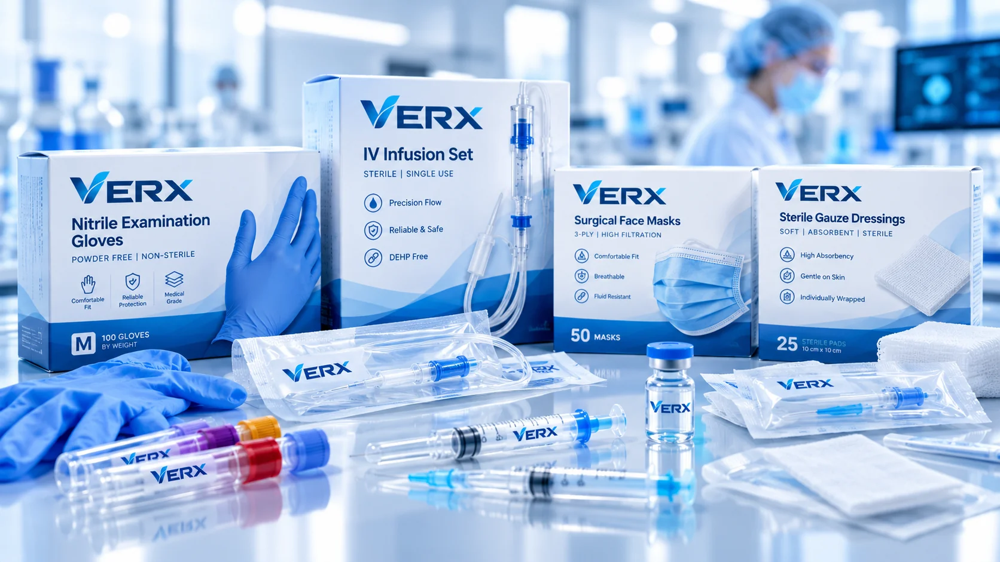

Wide product range
From everyday consumables to specialist clinical equipment, explore our core categories.

VERX Global supplies medical consumables, clinical equipment and healthcare solutions for professional buyers and healthcare organisations worldwide.
A considered portfolio of medical consumables and clinical equipment, with practical support for professional healthcare buyers.
From everyday consumables to specialist clinical equipment, explore our core categories.
Discuss your product requirements, destination market and commercial supply needs.

Product suitability, relevant documentation and destination-market requirements come first.



Product photographs are illustrative. Specifications, availability, brand and regulatory status are confirmed on enquiry.
From product selection to commercial conversations, our approach is grounded in clarity, considered sourcing and the details that matter to healthcare buyers.
Discover VERX GlobalVERX / GLOBAL HEALTHCARE SOLUTIONS
We start with your application, product specifications, quantities and destination market.
We discuss product options, requirements and available documentation before next steps.
Commercial terms and supply arrangements are discussed with clarity and care.
Whether your need is routine clinical supplies or a more specialised procurement conversation, VERX brings products and practical supply support into focus.
No unnecessary complexity. Just a clearer path to discussing the products and specifications you need.
Tell us the products, quantities and destination you have in mind.
We discuss relevant product details, documentation and availability.
Clarify pricing, requirements and supply terms before proceeding.
Discuss fulfilment logistics appropriate to the market and order.
Tell us what your organisation needs. We’ll help you begin the right product and supply conversation.